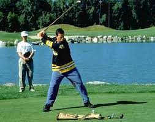
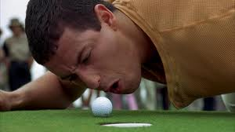
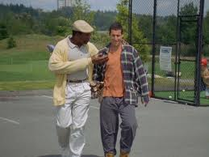
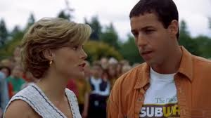

|
Happy Gilmore is a 1996 sports comedy film directed by Dennis Dugan and produced by Robert Simonds. It stars Adam Sandler as the title character, an unsuccessful ice hockey player who discovers a talent for golf. The screenplay was written by Sandler and Tim Herlihy. This film was the first of multiple collaborations between Sandler and Dugan. |
|  |  |  |  |
At the beginning of the movie Happy Gilmore (Adam Sandler) talks about his life. His mom moved to Egypt because of his father's obsession for hockey. Shortly after that, his father was killed by a hockey puck to the head. Then Happy was forced to move in with his grandmother (Frances Bay). Happy Gilmore had many jobs like janitor, gas station attendant, security guard, plumber and a construction worker. The construction job didn't work out well because he shot his giant boss, Mr. Larsen (Richard Kiel) in the head with a nail gun which got Happy beaten up very badly.
Happy Gilmore has hockey tryouts and doesn't make the team so he gets in a fist fight with the coach of the team. When Happy gets home, his girlfriend leaves him because she says he is a loser. The next morning Happy goes to his Grandma's house because the IRS is going to take her home and everything in it. Happy is angry so he throws the IRS agent (Robert Smigel) through the front door. He is told to get the house back, they need to come up with $270,000. Happy wants to watch the hockey game at his grandma's house so he goes outside to tell the moving guys to get back to work. The 2 guys try out golf clubs and then challenge Happy to see if he can outdrive one of them. If he does then they will get back to work. Happy hits the ball over 400 yards and breaks a window of a house. Then the men ask him do it again for $20. He does it and hits a man in the head. Then they offer him double or nothing and he does and this time hits woman in the head and she falls off a roof. That is when he notices his ability to drive a golf ball. Happy then brings his grandma to the nursing home where she will live.
The next day Happy goes to the driving range to hustle people and earn some money. He outdrives everyone there. A former club pro with a fake hand, Chubbs Peterson (Carl Weathers) introduces himself near the batting cages and tells him to enter the Waterbury Open. Happy refuses but Chubbs tells him he can make money. Happy thinks of grandma so he decides to enter the Waterbury Open.
The day of the Waterbury Open, Shooter McGavin (Christopher McDonald) is introduced to everyone there. He is the top pro golfer and the money leader. The winner of the Waterbury Open gets to join the Pro Tour. Happy Gilmore wins the Waterbury Open. Chubbs offers Happy six months of training to get better at putting but he refuses. Happy needs the money within a certain amount of time and can't afford to miss the oppurtunity to win money on the tour. Happy meets Virginia (Julie Bowen) who is a journalist for the tour. Happy Gilmore attends a tour party and is told by Shooter to meet him at the 9th green at nine. Happy goes and the sprinklers go off so now he wants to beat up Shooter. Happy goes to visit grandma at the nursing home and she pretends to like it there even though she hates it. The orderly (Ben Stiller) threatens her and says if she tells Happy that they abuse people then she will be killed.
The AT and T Open is the first event of the tour and Happy Gilmore doesn't do very well. Happy Gilmore and Virginia go on a date to ice skate and she kisses Happy. Later in the tour Happy is paired with Bob Barker in a tournament. Bob Barker is mad at Happy for doing bad in the tournament because a man is annoying Happy. Happy gets in a fistfight with Bob and loses. Chubbs takes Happy to a miniature golf course to play a game. Happy does good so Chubbs gives him a putter that looks like a hockey stick as a gift. Happy tells Chubbs that he has a gift for him and opens up a wooden box. The box contains the alligator that bit of Chubbs hand. Chubbs is so frightened, he accidentally falls out of the window and dies.
Shooter McGavin buys the house at the auction and says he will piss on the ashes after he burns it down. Happy is threatened so he must now win the tour. The final event of the year is the Tour Championship which can get Happy enough money to get his grandma' house back. Shooter is intimidated by Happy so he hires people to distract Happy Gilmore during the championship. The match is close the whole way. A crazy fan, ordered by Shooter, runs Happy over with a car, but Happy is still okay. After the crazy man, ran over Happy, he drives into a tower which falls onto the green blocking Happy's chance for a birdie to win the tour. The judges say that he must play it as it is. Happy remembers the amazing putt he made at the miniature golf course and it is similar here. Happy hits the ball of the car and it goes through pipes and amazingly lands in the hole. Happy wins the tour championship and gets the gold jacket. Shooter steals the jacket and runs away with it but Mr. Larsen catches him and beats him up.
Happy, Virginia, Grandma and the homeless man who was Happy's caddy all go back to grandma's house.
THE END